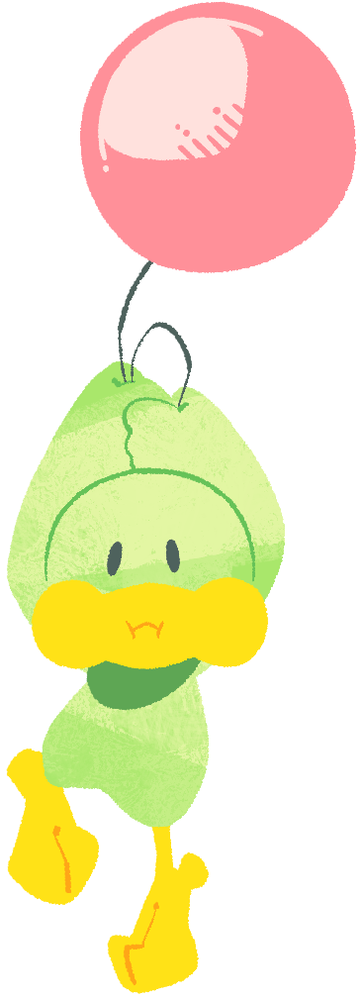

Fuwarin (Male)A younger, small brother of Kururin. He is easy-going, but has difficulties focusing and becomes easily distracted, which in turn frustrates Gizarin to the point the two argue with each other a lot. He has a balloon for a tail, and also one on his head instead of hair. How this happened is a complete mystery... |
 |